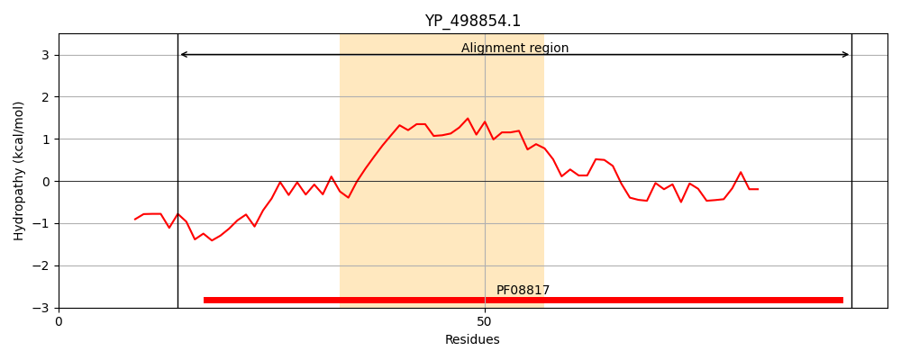
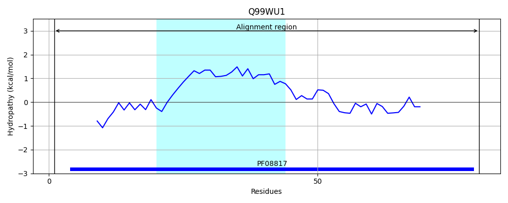
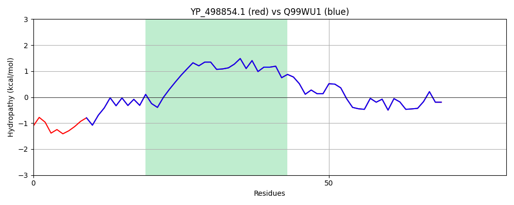

Hit Accession: Q99WU1
Hit TCID: 3.A.7.17.1
Hit Description: gnl|BL_ORD_ID|17685 gnl|TC-DB|Q99WU1|3.A.7.17.1 Protein esaB - Staphylococcus aureus (strain Mu50 / ATCC 700699).
Mach Len: 80
e:0.000000
Query TMS Count : 1
Hit TMS Count: 1
TMS-Overlap Score: 1.250000
Predicted Substrates:CHEBI:36080;protein, CHEBI:36080;protein
BLAST Alignment:
| Protein Hydropathy Plots: | |
|---|---|
|  |  |
Pairwise Alignment-Hydropathy Plot: | |
|  | |